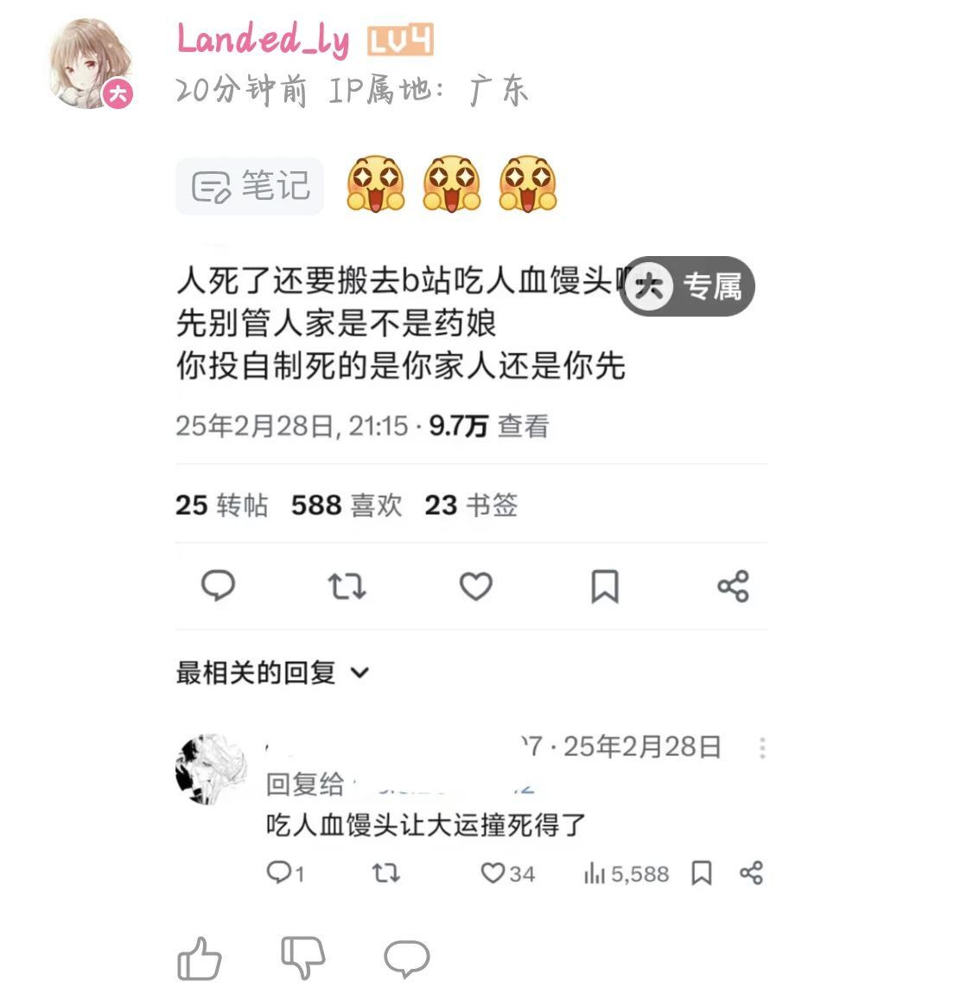
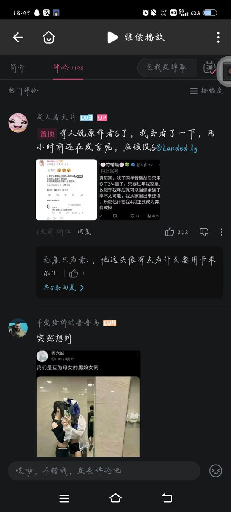
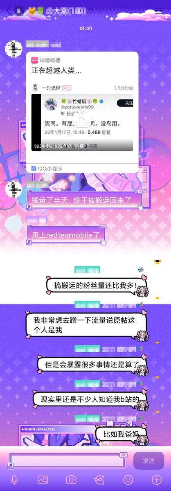

保守估计被墙内至少几十个营销号搬运了，光我认识的人告诉我的就8个了，妈的幸亏我内外网ID不一样，不然我祖上八十代的DNA序列都能被他们扒出来，不敢想象我如果像某些药娘一样喜欢全平台同名同头像会是怎么样的盛大光景




越传越离谱了，说我是药娘就算了怎么还有说我死了的，而且男同有屁用女同有鸟用这条也不是我想出来的文案，然后就说把我死前的文案搬b站自制是吃人血馒头，啊？不是？所有在墙内平台发这个截图的都不是我本人，我全平台不同名，还有号主的生命体征很正常，没进ICU也没打吊针，刚打完舞萌 https://t.co/xvKMG7uS5M